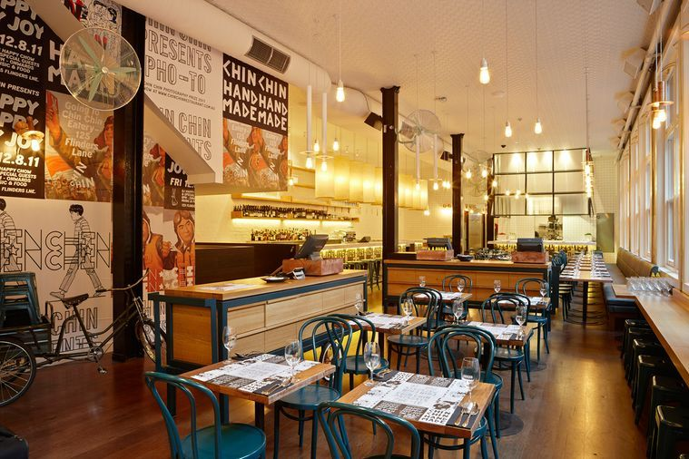

Find Your Perfect Table,
Every Time
ForkFinder connects food lovers with the best restaurants in the city. Discover new cuisines, get personalised recommendations, and reserve your table in minutes.
Why ForkFinder?
We believe every meal should be memorable. ForkFinder makes it effortless to discover, compare, and book the perfect restaurant for any occasion.
Discover Restaurants
Browse hundreds of curated restaurants with detailed menus, prices, photos, and real diner reviews.
Smart Recommendations
Our preference engine matches you to the perfect restaurant based on your diet, budget, and occasion.
Instant Reservations
Book your table online in under two minutes with flexible deposit options and instant confirmation.
Inclusive Dining
Filter by dietary needs including vegan, halal, gluten-free, and more — everyone is welcome at the table.
Good Food,
Made Simple
Whether you're planning a romantic date night, a family celebration, or an important business dinner, ForkFinder has the right table waiting for you.
Our platform partners with Melbourne's finest restaurants from casual bistros to fine dining establishmentsto give you the widest choice with the easiest booking experience.
Explore All Restaurants
A Table for Everyone
ForkFinder caters to every kind of diner and dining occasion.
Families
Kid-friendly venues with diverse menus everyone will love
Couples
Romantic settings for anniversaries, dates, and proposals
Professionals
Upscale venues perfect for business lunches and client dinners
Tourists
Discover Melbourne's culinary scene with local expert picks
Dietary Needs
Extensive vegan, halal, gluten-free, and allergy-aware options
Quick Reserve
Select a restaurant and go straight to booking
Not sure where to go? Get a personalised recommendation →
Ready to Discover Your Next Favourite Restaurant?
Create a free account and get access to exclusive deals and priority reservations.
Create Free Account